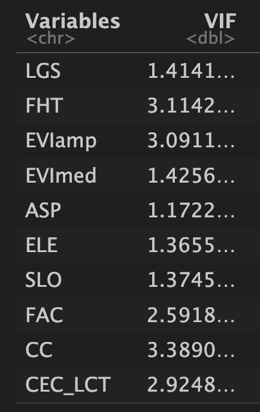
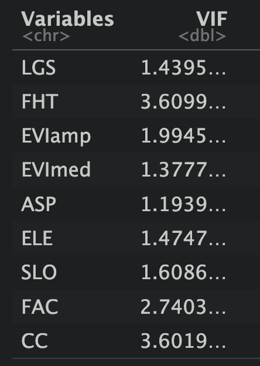
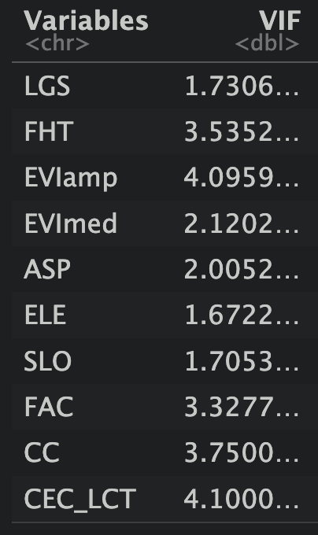
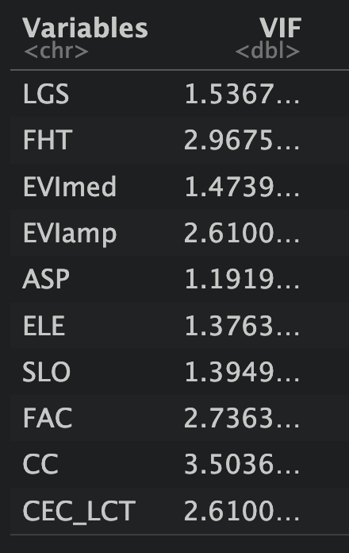
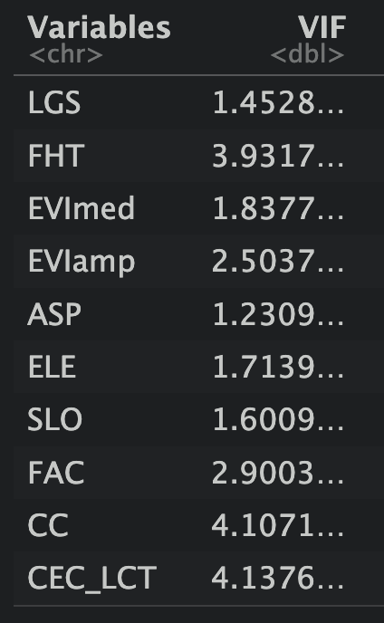
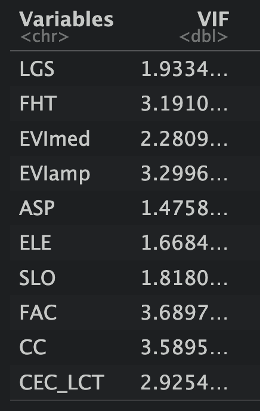
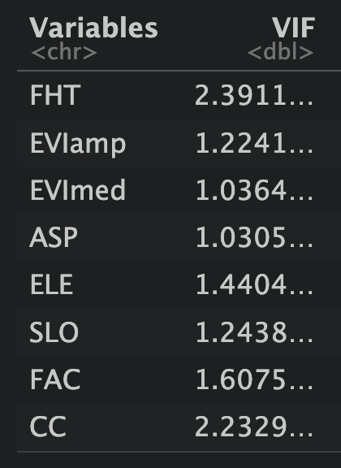
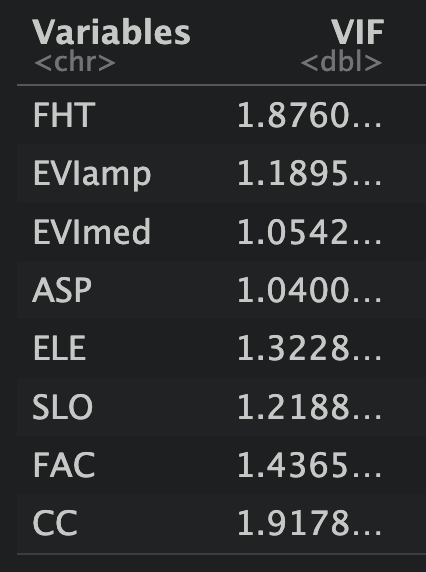
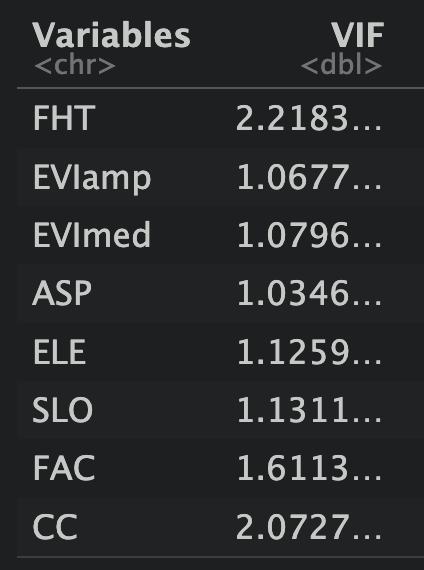

overview of process so far
List of predictor variables
Forest height: FHT (m)
range: 0 - 20
year: 2019
Length of growing season: LGS (days)
calculated by subtracting date of onset of greenness increase (15% increase in greeness) from onset greenness decrease (10% decrease in greenness)
range: 28 - 244 days
year: 2020
*there are quite a few spots without data
Canopy cover: cc (%)
range: 0 - 100
year:
Terra Nova: 2010 with gaps filled in with 2005 (2015 had most of the park missing)
Gros Morne: 2015 with gaps filled in with 2010
Enhanced vegetation index: EVI (NA)
amplitude: EVIamp, maximum minus minimum EVI during that year “interpreted as indicating the degree to which the leaf life cycles of individual plants and species are synchronized” (Gerard et al. 2020)
median: EVImed, median EVI during that year
range: 16 - 9600
year: 2019
Aspect: ASP (degrees)
range: 0-360
year: 2011
*when slope is 0 there can be no aspect, in these instances I put 0.01˚as aspect
Slope: SLO (percent)
range: 0 - 260
Elevation: ELE (m)
Dominant species: SPC (categorical) * decided to switch from dominant species to forest type because I didn’t sample all dominant species
range: 8 categories (CS = coniferous shrub, DS = deciduous shrub, NS = not sufficiently restocked, bf = balsam fir, bs = black spruce, tA = trembling aspen, tL = tamarack, wB = white birch)
year: 2010
Land cover type: CEC_LCT (categorical)
range: 5 categories (1 = temperate or sub-polar needle leaf forest, 6 = mixed forest, 8 = temperate or sub-polar shrubland, 14 = wetland, 16 = barrenland)
year: 2020
Age class: FAC (categorical)
range: 5 categories (1 = 0 - 20, 2 = 21 - 40, 3 = 41 - 60, 4 = 61 - 80, 5 = 81+)
Correlation charts
at sites
across both parks


TN


GM


for subplots
across both parks


TN


GM


for whole parks
across both parks


TN


GM


Conclusions
The patterns are quite consistent across each subset of the data.
My conclusions are predominantly based on the correlation charts, but I also am influenced a bit by the fact that none of the variance inflation factors are above 4.2, with most being below 2.
Remove CC
Canopy cover is very correlated with forest height. And although I have no biological reasoning for keeping forest height over canopy cover, the forest height data set is more complete and recent.
Remove FAC
The forest age is technically categorical, but the categories are ranges of a continuous variable. Is it ok to use it in a correlation chart?
If it is ok to use I propose removing FAC. It is very correlated with height. And I would prefer to keep height because it is actually a continuous variable.
Remove LCT
Land cover type is also actually a categorical variable so it’s interesting that it is so correlated. It is probably because the higher numbers describe less vegetated land cover types (eg; 1 is temperate needle forest, 8 is shrubland and 16 is barrenland).
The only data we are really losing by removing it is whether the forested areas are needle leaf or mixed forest.
Residual distributions from GzLMs
for full model in Gros Morne with C per m2 of each subplot used as response variable and a random effect of site. Predictor variables have been scaled.
C ~ FHT + EVIamp + EVImed + ELE + SLO + ASP + (1|site_id)
Gaussian
Log link

Gamma
log link

Inverse and identity links don’t converge
log tranformed linear model
scaled predictors

not scaled predictors: give warning
Warning: Some predictor variables are on very different scales: consider rescaling

Linear Models
subsetting data
park level
by park -> GM and TN get own models
subplot or site
sites -> average C per m2 across the 4 subplots at each site
subplots -> use C per m2 of each subplot and have random effect of site to account for pseudoreplication
structure
log(C) ~ ε
log(C) ~ (1|site) + ε
log(C) ~ all env. + ε
log(C) ~ all env. + (1|site) + ε
log(C) ~ reduced env. + ε
log(C) ~ reduced env. + (1|site) + ε
log(C) ~ univariate + ε
log(C) ~ univariate + (1|site) + ε